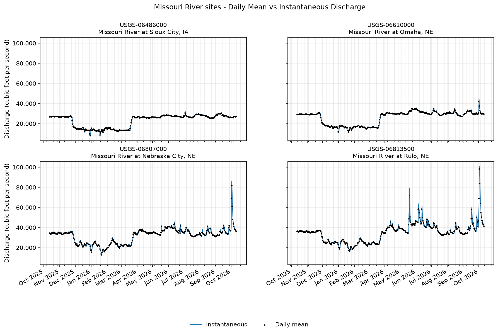
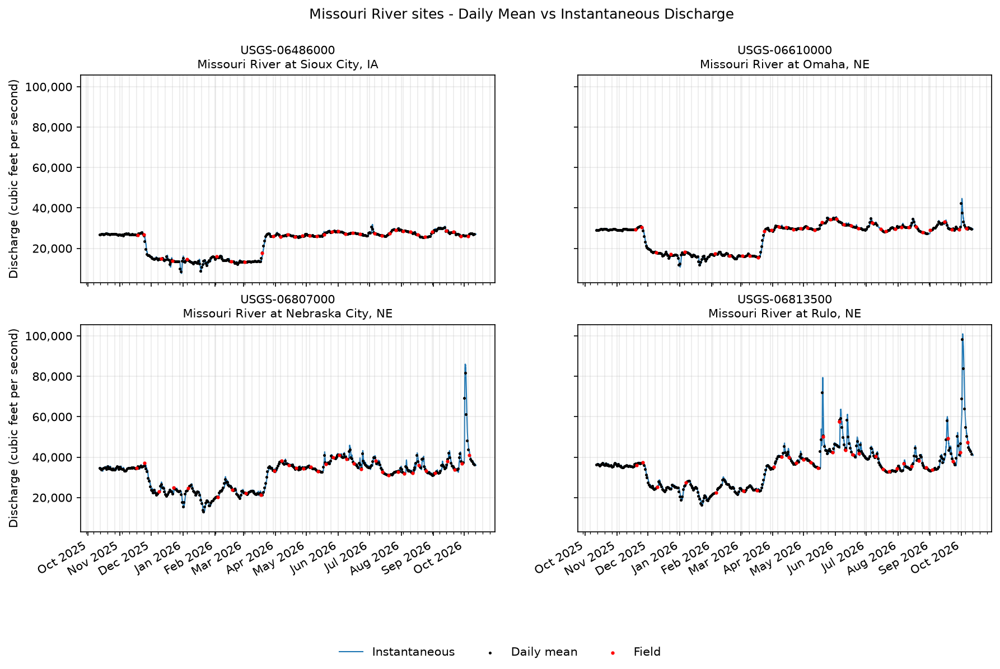

Using the waterdata module to pull data from the USGS Water Data APIs
The waterdata module replaces the nwis module for accessing USGS water data. It leverages the Water Data APIs to download metadata, daily values, and instantaneous values.
While the specifics of this transition timeline are opaque, it is advised to switch to the new functions as soon as possible to reduce unexpected interruptions in your workflow.
As always, please report any issues you encounter on our Issues page. If you have questions or need help, please reach out to us at comptools@usgs.gov.
Prerequisite: Get your Water Data API key
We highly suggest signing up for your own API key here to afford yourself higher rate limits and more reliable access to the data. If you opt not to register for an API key, then the number of requests you can make to the Water Data APIs is considerably lower, and if you share an IP address across users or workflows, you may hit those limits even faster. Luckily, registering for an API key is free and easy.
Once you’ve copied your API key and saved it in a safe place, you can set it as an environment variable in your Python script for the current session:
import os
os.environ['API_USGS_PAT'] = 'your_api_key_here'
Note that the environment variable name is API_USGS_PAT, which stands for “API USGS Personal Access Token”.
If you’d like a more permanent, repository-specific solution, you can use the python-dotenv package to read your API key from a .env file in your repository root directory, like this:
!pip install python-dotenv # only run this line once to install the package in your environment
from dotenv import load_dotenv
load_dotenv() # this will load the environment variables from the .env file
Make sure your .env file contains the following line:
API_USGS_PAT=your_api_key_here
Also, do not commit your .env file to version control, as it contains sensitive information. You can add it to your .gitignore file to prevent accidental commits.
Lay of the Land
Now that your API key is configured, it’s time to take a 10,000-ft view of the functions in the waterdata module.
Metadata endpoints
These functions retrieve metadata tables that can be used to refine your data requests.
get_reference_table()- Not sure which parameter code you’re looking for, or which hydrologic unit your study area is in? This function will help you find the right input values for the data endpoints to retrieve the information you want.get_codes()- Similar toget_reference_table(), this function retrieves dataframes containing available input values that correspond to the Samples water quality database.
Data endpoints
get_daily()- Daily values for monitoring locations, parameters, stat codes, and more.get_continuous()- Instantaneous values for monitoring locations, parameters, statistical codes, and more.get_monitoring_locations()- Monitoring location information such as name, monitoring location ID, latitude, longitude, huc code, site types, and more.get_time_series_metadata()- Timeseries metadata across monitoring locations, parameter codes, statistical codes, and more. Can be used to answer the question: what types of data are collected at my site(s) of interest and over what time period are/were they collected?get_latest_continuous()- Latest instantaneous values for requested monitoring locations, parameter codes, statistical codes, and more.get_latest_daily()- Latest daily values for requested monitoring locations, parameter codes, statistical codes, and more.get_field_measurements()- Physically measured values (a.k.a. discrete) of gage height, discharge, groundwater levels, and more for requested monitoring locations.get_samples()- Discrete water quality sample results for monitoring locations, observed properties, and more.
A few key tips
You’ll notice that each of the data functions has many unique inputs you can specify. DO NOT specify too many! Specify just enough inputs to return what you need. But do not provide redundant geographical or parameter information as this may slow down your query and lead to errors.
Each function returns a Tuple, containing a dataframe and a Metadata class. If you have
geopandasinstalled in your environment, the dataframe will be aGeoDataFramewith a geometry included. If you do not havegeopandas, the dataframe will be apandasdataframe with the geometry contained in a coordinates column. The Metadata object contains information about your query, like the query URL.If you do not want to return the
geometrycolumn, use the inputskip_geometry=True.All of these functions (except
get_samples()) have alimitargument, which signifies the number of rows returned with each “page” of data. The Water Data APIs use paging to chunk up large responses and send data most efficiently to the requester. Thewaterdatafunctions collect the rows of data from each page and combine them into one final dataframe at the end. The default and maximum limit per page is 50,000 rows. In other words, if you request 100,000 rows of data from the database, it will return all the data in 2 pages, and each page counts as a “request” using your API key. If you were to change the argument tolimit=10000, then each page returned would contain 10,000 rows, and it would take 10 requests/pages to return the total 100,000 rows. In general, there is no need to adjust thelimitargument. However, if you are working with slow internet speeds, adjusting thelimitargument may reduce chances of failures due to bandwidth.You can find some other helpful tips in the Water Data API documentation.
Examples
Let’s get into some examples using the functions listed above. First, we need to load the waterdata module and a few other packages and functions to go through the examples. To run the entirety of this notebook, you will need to install dataretrieval, matplotlib, and geopandas packages (plus dependencies). matplotlib is needed to create the plots, and geopandas is needed to create the interactive maps.
Note that if you use conda rather than pip, you do not need to install folium and mapclassify separately, as they are included in the conda-forge geopandas install.
!pip install dataretrieval
!pip install matplotlib
!pip install geopandas
!pip install folium
!pip install mapclassify
[1]:
from datetime import date, datetime, timedelta
import matplotlib.dates as mdates
import matplotlib.pyplot as plt
import matplotlib.ticker as mtick
import pandas as pd
from dateutil.relativedelta import relativedelta
from IPython.display import display
from dataretrieval import waterdata
Reference tables
[2]:
pcodes, metadata = waterdata.get_reference_table("parameter-codes")
display(pcodes.head())
Retrieving: parameter-codes · 1 page · 19,617 rows
| parameter_code | parameter_name | unit_of_measure | parameter_group_code | parameter_description | medium | statistical_basis | time_basis | weight_basis | particle_size_basis | sample_fraction | temperature_basis | epa_equivalence | |
|---|---|---|---|---|---|---|---|---|---|---|---|---|---|
| 0 | 00001 | Xsec loc, US from rb | ft | INF | Location in cross section, distance from right... | NaN | NaN | NaN | NaN | NaN | NaN | NaN | Agree |
| 1 | 00002 | Xsec loc, US from rb | % | INF | Location in cross section, distance from right... | NaN | NaN | NaN | NaN | NaN | NaN | NaN | Agree |
| 2 | 00003 | Sampling depth | ft | INF | Sampling depth, feet | NaN | NaN | NaN | NaN | NaN | NaN | NaN | Agree |
| 3 | 00004 | Stream width | ft | PHY | Stream width, feet | NaN | NaN | NaN | NaN | NaN | NaN | NaN | Agree |
| 4 | 00005 | Loctn in X-sec,depth | % | INF | Location in cross section, fraction of total d... | NaN | NaN | NaN | NaN | NaN | Total | NaN | Agree |
Let’s say we want to find all parameter codes relating to streamflow discharge. We can use some string matching to find applicable codes.
[3]:
streamflow_pcodes = pcodes[
pcodes["parameter_name"].str.contains("streamflow|discharge", case=False, na=False)
]
display(streamflow_pcodes[["parameter_code", "parameter_name"]])
| parameter_code | parameter_name | |
|---|---|---|
| 42 | 00060 | Discharge |
| 43 | 00061 | Discharge, instant. |
| 479 | 01351 | Streamflow, severity |
| 769 | 04122 | Bedload discharge, daily mean |
| 1701 | 30208 | Discharge |
| 1702 | 30209 | Instantaneous Discharge |
| 3704 | 50042 | Discharge |
| 9272 | 62856 | Discharge, storm event peak |
| 14084 | 70227 | Direction,StreamFlow |
| 14292 | 72122 | Discharge, storm event median |
| 14293 | 72123 | Discharge, storm event mean |
| 14307 | 72137 | Discharge,tide fltrd |
| 14308 | 72138 | Discharge,tide fltrd |
| 14309 | 72139 | Discharge,tide fltrd |
| 14346 | 72177 | Discharge, GW |
| 14410 | 72243 | Discharge |
| 14425 | 72258 | Discharge factor |
| 14439 | 72272 | Discharge, cumul |
| 14600 | 72433 | Discharge, cumulative |
| 14601 | 72434 | Discharge, cumulative |
| 14727 | 74082 | Streamflow, daily |
| 15074 | 81380 | Discharge velocity |
| 15075 | 81381 | Discharge duration |
| 15117 | 81799 | Discharge, sample mean |
| 19129 | 99060 | Discharge |
| 19130 | 99061 | Discharge, instantaneous |
Interesting that there are so many different streamflow-related parameter codes! Going on experience, let’s use the most common one, 00060, which is “Discharge, cubic feet per second”.
Timeseries metadata
Now that we know which parameter code we want to use, let’s find all the stream monitoring locations that have recent discharge data and at least 10 years of daily values in the state of Nebraska. We will use the waterdata.get_time_series_metadata() function to suss out which sites fit the bill. This function will return a row for each timeseries that matches our inputs. It doesn’t contain the daily discharge values themselves, just information about that timeseries.
First, let’s get our expected date range in order. Note that the waterdata functions are capable of taking in bounded and unbounded date and datetime ranges. In this case, we want the start date of the discharge timeseries to be no more recent than 10 years ago, and we want the end date of the timeseries to be from at most a week ago. We can use the notation {date}/.. to mean that we want all timeseries that end a week ago or more recently. Similarly, we can use the notation
../{date} to mean we want all timeseries that started at least 10 years ago (and thus likely have at least 10 years of data).
[4]:
ten_years_ago = (date.today() - relativedelta(years=10)).strftime("%Y-%m-%d")
one_week_ago = (datetime.now() - timedelta(days=7)).date().strftime("%Y-%m-%d")
We will also use the skip_geometry argument in our timeseries metadata call. By default, most waterdata functions return a geometry column containing the monitoring location’s coordinates. This is a really cool feature that we will use later, but for this particular data pull, we don’t need it. Setting skip_geometry=True makes the returned dataframe smaller and more efficient.
[5]:
NE_discharge, _ = waterdata.get_time_series_metadata(
state_name="Nebraska",
parameter_code="00060",
begin=f"../{ten_years_ago}",
end=f"{one_week_ago}/..",
skip_geometry=True,
)
/tmp/ipykernel_6208/1112337416.py:1: DeprecationWarning: The 'state_name' argument of get_time_series_metadata is deprecated and will be removed from `dataretrieval` on or after 2027-06-01; use get_combined_metadata(state_name=...) instead. v1 of the Water Data API has no such field, so this call is sent to v0.
NE_discharge, _ = waterdata.get_time_series_metadata(
Retrieving: time-series-metadata · 1 page · 219 rows
[6]:
display(NE_discharge.sort_values("monitoring_location_id").head())
print(
f"There are {len(NE_discharge['monitoring_location_id'].unique())} sites with recent discharge data available in the state of Nebraska"
)
| time_series_id | unit_of_measure | parameter_name | parameter_code | statistic_id | hydrologic_unit_code | state_name | last_modified | begin | end | ... | computation_period_identifier | computation_identifier | thresholds | sublocation_identifier | primary | monitoring_location_id | web_description | parameter_description | parent_time_series_id | data_gap_interval | |
|---|---|---|---|---|---|---|---|---|---|---|---|---|---|---|---|---|---|---|---|---|---|
| 170 | c8f66a81be244941a4c8975ac4393f57 | ft^3/s | Discharge | 00060 | 00011 | 101701040305 | Nebraska | 2026-10-12 05:31:45.812775 | 1990-10-01 05:30:00.000001 | 2026-10-12 05:15:00.000001 | ... | Points | Instantaneous | [{'Name': 'Peak of record discharge on March 2... | None | Primary | USGS-06453600 | Discharge from Primary Sensor | Discharge, cubic feet per second | 8bb3bd5324824c029efdb2b26553d52f | PT1H12M |
| 29 | 2daeaac402fb46e594ad265d1fed145c | ft^3/s | Discharge | 00060 | 00003 | 101701040305 | Nebraska | 2026-10-12 06:31:29.315344 | 1957-10-01 00:00:00.000001 | 2026-10-10 00:00:00.000001 | ... | Daily | Mean | [] | None | Primary | USGS-06453600 | NaN | Discharge, cubic feet per second | c8f66a81be244941a4c8975ac4393f57 | NaN |
| 140 | a661caa558244bf8a054018ccae0553a | ft^3/s | Discharge | 00060 | 00003 | 101500040905 | Nebraska | 2026-10-12 06:59:41.025880 | 1945-10-01 00:00:00.000001 | 2026-10-10 00:00:00.000001 | ... | Daily | Mean | [] | None | Primary | USGS-06461500 | NaN | Discharge, cubic feet per second | 9d41bfe5d9374b998cb9c93310bbbdd8 | NaN |
| 133 | 9d41bfe5d9374b998cb9c93310bbbdd8 | ft^3/s | Discharge | 00060 | 00011 | 101500040905 | Nebraska | 2026-10-12 09:02:37.894719 | 1991-05-17 05:00:00.000001 | 2026-10-12 08:45:00.000001 | ... | Points | Instantaneous | [{'Name': 'VERY HIGH', 'Type': 'ThresholdAbove... | None | Primary | USGS-06461500 | NaN | Discharge, cubic feet per second | 7768da7acdf14408b2ccb72b1084cc3a | PT1H12M |
| 69 | 58fcf157597f4f8f9b351312a1993e05 | ft^3/s | Discharge | 00060 | 00003 | 101500041309 | Nebraska | 2026-10-12 06:51:03.977110 | 1948-05-01 00:00:00.000001 | 2026-10-10 00:00:00.000001 | ... | Daily | Mean | [] | None | Primary | USGS-06463500 | NaN | Discharge, cubic feet per second | f5f7a38d1ad548dbb6f4cb876f9833a5 | NaN |
5 rows × 22 columns
There are 110 sites with recent discharge data available in the state of Nebraska
In the dataframe above, we are looking at 5 timeseries returned, ordered by monitoring location. You can also see that the first two rows show two different kinds of discharge for the same monitoring location: a mean daily discharge timeseries (with statistic id 00003, which represents “mean”) and an instantaneous discharge timeseries (with statistic id 00011, which represents “points” or “instantaneous” values). Look closely and you may also
notice that the parent_timeseries_id column for daily mean discharge matches the time_series_id for the instantaneous discharge. This is because once instantaneous measurements began at the site, they were used to calculate the daily mean.
Monitoring locations
Now that we know which sites have recent discharge data, let’s find stream sites and plot them on a map. We will use the waterdata.get_monitoring_locations() function to grab more metadata about these sites.
We can feed the unique monitoring location IDs from NE_discharge into the get_monitoring_locations() function to get the metadata for just those sites. However, there is a limit to the number of IDs that can be passed in one call to the API. Further down in this notebook, you’ll see an example where we successfully feed all ~100 IDs in one call to the API. However, for demonstration purposes, we will split the list of monitoring location IDs into a few chunks of 50 sent to the API and
stitch the resulting dataframes together. A loose rule of thumb is to keep the number of IDs below 200, but this exact number will depend on the typical length of each monitoring location ID (i.e. if your monitoring location IDs are > 13 characters long: “USGS-XXXXXXXX”+, you will need to feed in fewer than 200 at a time).
[7]:
chunk_size = 50
site_list = NE_discharge["monitoring_location_id"].unique().tolist()
chunks = [site_list[i : i + chunk_size] for i in range(0, len(site_list), chunk_size)]
NE_locations = pd.DataFrame()
for site_group in chunks:
try:
chunk_data, _ = waterdata.get_monitoring_locations(
monitoring_location_id=site_group, site_type_code="ST"
)
if not chunk_data.empty:
NE_locations = pd.concat([NE_locations, chunk_data])
except Exception as e:
print(f"Chunk failed: {e}")
display(
NE_locations[
["monitoring_location_id", "monitoring_location_name", "hydrologic_unit_code"]
].head()
)
Retrieving: monitoring-locations · 1 page · 49 rows
No API key detected — register for higher rate limits at https://api.waterdata.usgs.gov/signup/
Retrieving: monitoring-locations · 1 page · 49 rows
Retrieving: monitoring-locations · 1 page · 10 rows
| monitoring_location_id | monitoring_location_name | hydrologic_unit_code | |
|---|---|---|---|
| 0 | USGS-06453600 | Ponca Creek at Verdel, Nebr. | 101701040305 |
| 1 | USGS-06463720 | Niobrara River at Mariaville, Nebr. | 101500041506 |
| 2 | USGS-06600900 | South Omaha Creek at Walthill, Nebr. | 102300010103 |
| 3 | USGS-06610732 | Big Papillion Creek at Fort Street at Omaha, N... | 102300060205 |
| 4 | USGS-06610765 | Little Papillion Cr at Ak-Sar-Ben at Omaha, Nebr. | 102300060204 |
That took a little bit of work to loop through the site chunks and bind the data back together. Admittedly, there may be times where chunking and iterating might be the most efficient workflow. But in this particular case, we have a less onerous option available: get_monitoring_locations() has a state_name argument. It will likely be faster to pull all stream sites for Nebraska and then filter down to the sites present in the timeseries dataframe: no iteration needed. Let’s try this too.
[8]:
NE_locations, _ = waterdata.get_monitoring_locations(
state_name="Nebraska", site_type_code="ST"
)
NE_locations_discharge = NE_locations.loc[
NE_locations["monitoring_location_id"].isin(
NE_discharge["monitoring_location_id"].unique().tolist()
)
]
display(
NE_locations_discharge[
["monitoring_location_id", "monitoring_location_name", "hydrologic_unit_code"]
].head()
)
Retrieving: monitoring-locations · 1 page · 1,733 rows
| monitoring_location_id | monitoring_location_name | hydrologic_unit_code | |
|---|---|---|---|
| 15 | USGS-06453600 | Ponca Creek at Verdel, Nebr. | 101701040305 |
| 45 | USGS-06461500 | Niobrara River near Sparks, Nebr. | 101500040905 |
| 62 | USGS-06463500 | Long Pine Creek near Riverview, Nebr. | 101500041309 |
| 64 | USGS-06463720 | Niobrara River at Mariaville, Nebr. | 101500041506 |
| 80 | USGS-06465500 | Niobrara River near Verdel, Nebr. | 101500071004 |
If you have geopandas installed, the function will return a GeoDataFrame with a geometry column containing the monitoring locations’ coordinates. You can use gpd.explore() to view your geometry coordinates on an interactive map. We will demo this functionality below (Hover over the site points to see all the columns returned from waterdata.get_monitoring_locations()). If you don’t have geopandas installed, dataretrieval will return a regular pandas DataFrame with
coordinate columns instead.
[9]:
NE_locations_discharge.set_crs(crs="WGS84").explore()
[9]:
Latest daily and instantaneous values
Now that we know which sites in Nebraska have recent discharge data, and we know where they are located, we can start downloading some actual flow values. Let’s start with some of the most “lightweight” functions, waterdata.get_latest_daily() and waterdata.get_latest_continuous(), which will return only the latest value for each monitoring location requested.
Recall from above, we are working with ~100 sites with discharge data. Conveniently, the waterdata functions are usually pretty good at handling requests of up to ~200 monitoring locations. However, if you have more than 200, you may be better off chopping up your list of sites into a few lists that you loop over.
[10]:
latest_dv, _ = waterdata.get_latest_daily(
monitoring_location_id=NE_locations_discharge["monitoring_location_id"].tolist(),
parameter_code="00060",
statistic_id="00003",
)
display(latest_dv.head())
Retrieving: latest-daily · 1 page · 108 rows
| geometry | time_series_id | monitoring_location_id | parameter_code | statistic_id | time | value | unit_of_measure | approval_status | qualifier | last_modified | latest_daily_id | |
|---|---|---|---|---|---|---|---|---|---|---|---|---|
| 0 | POINT (-98.1754 42.81086) | 2daeaac402fb46e594ad265d1fed145c | USGS-06453600 | 00060 | 00003 | 2026-10-11 | 7.72 | ft^3/s | Provisional | None | 2026-10-12 08:06:43.163761+00:00 | 6f3dd691-475f-42da-a723-478d63bdd747 |
| 1 | POINT (-100.36253 42.90208) | a661caa558244bf8a054018ccae0553a | USGS-06461500 | 00060 | 00003 | 2026-10-11 | 553.00 | ft^3/s | Provisional | None | 2026-10-12 08:12:20.576685+00:00 | 592b459a-d1cf-4732-8644-c6938e5080f4 |
| 2 | POINT (-99.67945 42.68964) | 58fcf157597f4f8f9b351312a1993e05 | USGS-06463500 | 00060 | 00003 | 2026-10-11 | 144.00 | ft^3/s | Provisional | None | 2026-10-12 08:08:47.607554+00:00 | 246d377f-0857-473b-9814-c40e92d733fb |
| 3 | POINT (-99.33471 42.78141) | 893237eb238543a6a0a87a3e20cb0192 | USGS-06463720 | 00060 | 00003 | 2026-10-11 | 1030.00 | ft^3/s | Provisional | None | 2026-10-12 08:11:03.026154+00:00 | 74c7c44e-e8b5-4b30-b16b-2f362c316cca |
| 4 | POINT (-98.22286 42.73979) | 9084ec7fa6234f85bfb62c9d79a71f8c | USGS-06465500 | 00060 | 00003 | 2026-10-11 | 730.00 | ft^3/s | Provisional | None | 2026-10-12 08:11:28.498946+00:00 | 3319ec03-72b9-4c09-94c4-66e0aaee5874 |
Note that because these measurements are less than a week old, most of them are still tagged as “Provisional” in the approval_status column. Some may also be missing values in the value column. You can often check the qualifier column for clues as to why a value is missing, or additional information specific to that measurement. Let’s map out the monitoring locations again and color the points based on the latest daily value.
[11]:
latest_dv["date"] = latest_dv["time"].astype(str)
latest_dv[
["geometry", "monitoring_location_id", "date", "value", "unit_of_measure"]
].set_crs(crs="WGS84").explore(
column="value", tiles="CartoDB dark matter", cmap="YlOrRd", scheme=None, legend=True
)
/opt/hostedtoolcache/Python/3.13.16/x64/lib/python3.13/site-packages/geopandas/explore.py:383: UserWarning: CartoDB tiles now require an API key. Please provide one to continue using the tiles. You can request the key at https://carto.com/basemaps/apikey/.
tiles = tiles.build_url(scale_factor="{r}")
[11]:
Let’s do the same routine with waterdata.get_latest_continuous(), but note that we do not need to specify the statistic_id: all instantaneous values have the statistical code “00011”.
[12]:
latest_instantaneous, _ = waterdata.get_latest_continuous(
monitoring_location_id=NE_locations_discharge["monitoring_location_id"].tolist(),
parameter_code="00060",
)
latest_instantaneous["datetime"] = latest_instantaneous["time"].astype(str)
latest_instantaneous[
["geometry", "monitoring_location_id", "datetime", "value", "unit_of_measure"]
].set_crs(crs="WGS84").explore(column="value", cmap="YlOrRd", scheme=None, legend=True)
Retrieving: latest-continuous · 1 page · 108 rows
[12]:
Daily and continuous values datasets
While the “latest” functions might be helpful for “realtime” or “current” dashboards or reports, many users desire to work with a complete timeseries of daily summary (min, max, mean) or instantaneous values for their analyses. For these workflows, waterdata.get_daily() and waterdata.get_continuous() are helpful.
Using our current example, let’s say that you want to compare daily and instantaneous discharge values for monitoring locations along the Missouri River in Nebraska.
[13]:
missouri_river_sites = NE_locations_discharge.loc[
NE_locations_discharge["monitoring_location_name"].str.contains("Missouri")
]
display(
missouri_river_sites[
[
"county_name",
"site_type",
"monitoring_location_id",
"monitoring_location_name",
"drainage_area",
"altitude",
]
]
)
| county_name | site_type | monitoring_location_id | monitoring_location_name | drainage_area | altitude | |
|---|---|---|---|---|---|---|
| 113 | Dakota County | Stream | USGS-06486000 | Missouri River at Sioux City, IA | 314600.0 | 1057.42 |
| 140 | Douglas County | Stream | USGS-06610000 | Missouri River at Omaha, NE | 322800.0 | 948.97 |
| 682 | Otoe County | Stream | USGS-06807000 | Missouri River at Nebraska City, NE | 410000.0 | 905.61 |
| 694 | Richardson County | Stream | USGS-06813500 | Missouri River at Rulo, NE | 414900.0 | 838.16 |
Currently, users may only request 3 years or less of continuous data in one pull. For this example, let’s pull the last 1 year of daily mean values and instantaneous values for these Missouri River sites. We’ll skip pulling geometry in the waterdata.get_daily() function; the waterdata.get_continuous() function does not return geometry at all to economize the size of the dataset returned.
[14]:
one_year_ago = (date.today() - relativedelta(years=1)).strftime("%Y-%m-%d")
missouri_site_ids = missouri_river_sites["monitoring_location_id"].tolist()
missouri_site_names = missouri_river_sites["monitoring_location_name"].tolist()
[15]:
daily_values, _ = waterdata.get_daily(
monitoring_location_id=missouri_site_ids,
parameter_code="00060",
statistic_id="00003", # mean daily value
time=f"{one_year_ago}/..",
skip_geometry=True,
)
Retrieving: daily · 1 page · 1,455 rows
[16]:
instantaneous_values, _ = waterdata.get_continuous(
monitoring_location_id=missouri_site_ids,
parameter_code="00060",
time=f"{one_year_ago}T00:00:00Z/..",
)
Retrieving: continuous · 3 pages · 138,886 rows
With these two datasets, let’s plot daily and instantaneous discharge values for the four Missouri River sites using matplotlib. We will plot each site on a different subplot, with instantaneous values represented by a blue line and daily mean values represented by black points.
[17]:
fig, axes = plt.subplots(2, 2, figsize=(14, 8), dpi=150, sharex=False, sharey=True)
axes = axes.ravel()
# Y-axis formatter (with thousands separators)
tick_fmt = mtick.StrMethodFormatter("{x:,.0f}")
for ax, site, site_name in zip(axes, missouri_site_ids, missouri_site_names):
# Filter per site & sort by time
inst = instantaneous_values.loc[
instantaneous_values["monitoring_location_id"] == site, ["time", "value"]
].sort_values("time")
daily = daily_values.loc[
daily_values["monitoring_location_id"] == site, ["time", "value"]
].sort_values("time")
# Instantaneous (line)
ax.plot(
inst["time"],
inst["value"],
color="#1f77b4",
lw=1.0,
label="Instantaneous",
zorder=1,
)
# Daily mean (black dots)
ax.scatter(
daily["time"], daily["value"], c="black", s=2, label="Daily mean", zorder=2
)
# Axes styling
ax.set_title(f"{site}\n{site_name}", fontsize=10)
ax.grid(True, which="both", alpha=0.25)
ax.yaxis.set_major_formatter(tick_fmt)
# Time ticks
ax.xaxis.set_major_locator(mdates.MonthLocator())
ax.xaxis.set_major_formatter(mdates.DateFormatter("%b %Y"))
ax.xaxis.set_minor_locator(mdates.WeekdayLocator(byweekday=mdates.MO))
# Common axis labels (left y on both left subplots; x labels on bottom row)
axes[0].set_ylabel("Discharge (cubic feet per second)")
axes[2].set_ylabel("Discharge (cubic feet per second)")
axes[2].set_xlabel("")
axes[3].set_xlabel("")
handles, labels = axes[-1].get_legend_handles_labels()
fig.legend(handles, labels, loc="lower center", ncol=2, frameon=False)
fig.suptitle("Missouri River sites - Daily Mean vs Instantaneous Discharge")
fig.autofmt_xdate()

Field values
Finally, let’s see if there are any discharge field measurements for these sites. These are manually recorded measurements (by a human), often used during calibration checks. We will use waterdata.get_field_measurements() to check. More commonly, a user would head to this function to gather groundwater level data, which are categorized as field measurements.
[18]:
field_measurements, _ = waterdata.get_field_measurements(
monitoring_location_id=missouri_site_ids,
parameter_code="00060",
time=f"{one_year_ago}T00:00:00Z/..",
)
display(field_measurements.head())
Retrieving: field-measurements · 1 page · 141 rows
| geometry | field_measurements_series_id | reading_type | field_visit_id | parameter_code | monitoring_location_id | observing_procedure_code | observing_procedure | value | unit_of_measure | ... | measuring_agency | last_modified | control_condition | measurement_rated | year | month | day | time_of_day | sublocation_identifier | field_measurement_id | |
|---|---|---|---|---|---|---|---|---|---|---|---|---|---|---|---|---|---|---|---|---|---|
| 0 | POINT (-95.84708 40.68181) | 93b16ba8-2cb5-424b-8813-e92ceb644b02 | Discharge | 64945f1e-cf13-45e3-81c0-61057e3029d6 | 00060 | USGS-06807000 | Z | Acoustic Doppler Current Profiler | 34700.0 | ft^3/s | ... | USGS | 2026-10-06 20:47:12.581167+00:00 | Clear | Good | 2025 | 11 | 17 | 16:12:25+00:00 | None | 00578717-229b-4826-890c-685110d33aba |
| 1 | POINT (-96.41308 42.48619) | 8dc6968b-a217-4a4f-89bf-636930610f47 | Discharge | 8fce8013-5718-47c3-a2ef-19d32a3131de | 00060 | USGS-06486000 | Z | Acoustic Doppler Current Profiler | 26600.0 | ft^3/s | ... | USGS | 2026-10-08 15:14:38.820110+00:00 | Clear | Good | 2025 | 11 | 18 | 17:01:22+00:00 | None | 11af2278-fd92-4197-9de9-2cc9b9221939 |
| 2 | POINT (-95.92325 41.25906) | 436c0cce-60cd-483f-a268-374d4e40c634 | Discharge | 41f19910-b366-44d4-b291-87d4d4444e4a | 00060 | USGS-06610000 | Z | Acoustic Doppler Current Profiler | 29400.0 | ft^3/s | ... | USGS | 2026-10-09 19:32:59.522448+00:00 | Clear | Good | 2025 | 11 | 19 | 18:20:36+00:00 | None | ee02fb4f-fec7-4854-830f-936f6a7f4b8f |
| 3 | POINT (-95.42175 40.05206) | 4102da0f-7c35-4469-8214-aef367b810b0 | Discharge | 53633479-220c-45b6-92a0-99b8288d9500 | 00060 | USGS-06813500 | Z | Acoustic Doppler Current Profiler | 36100.0 | ft^3/s | ... | USGS | 2026-10-07 22:17:20.423190+00:00 | Clear | Good | 2025 | 11 | 20 | 17:00:38+00:00 | None | 427557ae-39b4-4ad6-b248-3b7bf3d9ba82 |
| 4 | POINT (-96.41308 42.48619) | 8dc6968b-a217-4a4f-89bf-636930610f47 | Discharge | 20fbed1e-c1f2-4fc2-a043-c49edc4678fd | 00060 | USGS-06486000 | Z | Acoustic Doppler Current Profiler | 26700.0 | ft^3/s | ... | usgs | 2026-10-08 15:14:38.820110+00:00 | Clear | Good | 2025 | 11 | 24 | 16:31:12+00:00 | None | 98229915-21d0-4a5a-b2b2-3012d13c2dcb |
5 rows × 24 columns
Hey! We have some! Let’s add these to our plots from above. We’ll loop through each monitoring location plot and add in field measurements as red points.
[19]:
for ax, site in zip(axes, missouri_site_ids):
field = field_measurements.loc[
field_measurements["monitoring_location_id"] == site, ["time", "value"]
].sort_values("time")
ax.scatter(field["time"], field["value"], c="red", s=4, label="Field", zorder=3)
# Remove any existing figure-level legends
for leg in fig.legends:
leg.remove()
handles, labels = axes[-1].get_legend_handles_labels()
fig.legend(handles, labels, loc="lower center", ncol=3, frameon=False)
# Redraw the figure
fig.canvas.draw_idle()
fig
[19]:

Additional Resources
The USGS Water Data APIs belong to the Water Data for the Nation (WDFN) group of applications and tools. These products exist under the broader National Water Information System (NWIS) program. Check out the links below for more information on the USGS Water Data APIs and other ways to download or view USGS water data: